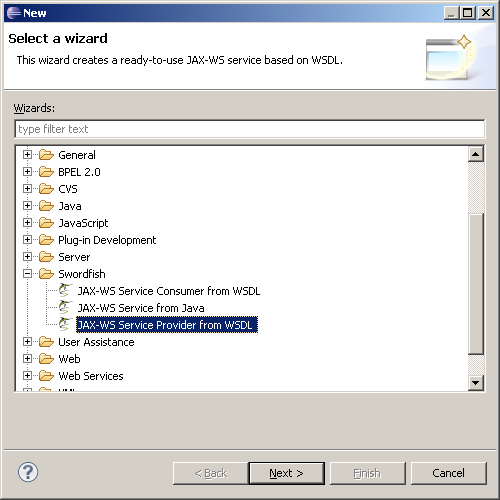

To create a JAX-WS service provider project based on an existing WSDL:
-
Do one of the following:
- Click File > New > Project... > Swordfish > JAX-WS Service Provider from WSDL.
- Click File > Import... > Swordfish > JAX-WS Service Provider from WSDL.
- Right-click the WSDL in your workspace and click Import... > Swordfish > JAX-WS Service Provider from WSDL.

-
Click Next.
-
In the New Plug-in Project wizard window, type a name for your project in the Project name field.
- Click Next.
-
In the Plug-in Content wizard window, we recommend that you clear the Generate an activator, a Java class that controls the plug-in's lifecycle check box because initialization using the Spring framework is preferred in Swordfish.
If you have started this wizard using the context menu option on a WSDL in your workspace, click Finish. Otherwise, click Next.
-
In the Generate sources from WSDL window, you can select the WSDL from your workspace, file system or Service Registry.
If your service will consume other (already existing) services, click Next. Otherwise, click Finish.
-
In the Composite Services Page window a list of available Swordfish JAX-WS consumer projects is displayed. Select the services your service provider is going to consume.
-
Click Finish.
The new Service Provider project is visible in your workspace.